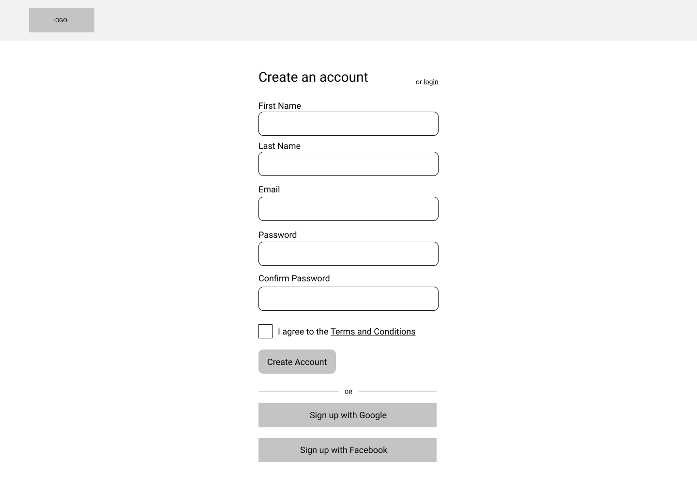
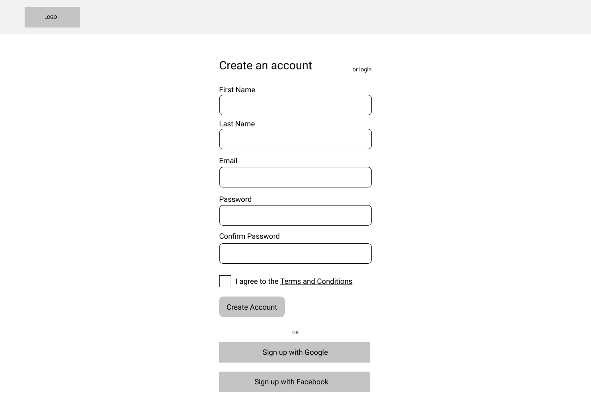

Summary
STUDIO is cloud storage web application focused on promoting and supporting creativity within the design community. The product provides storage space for users’ work and projects, the ability to share and collaborate with others, as well as a new project layout that provides more fluidity than a regular single page word document, to help inspire and encourage a more intuitive and visual virtual workspace for all design processes.
View prototypeRoles:
Product Design
Branding & Identity
Timeframe:
6 weeks
Deliverables:
User Surveys
User Personas
Competitive Analysis
User Stories
User Flows
Wireframes
Mockups
User Testing
Prototypes
Branding
Design System
Problem
I was tasked by a client to reach untapped audiences within the realm of the cloud storage marketplace. The goal was to design a niche product that allowed users to save web content, organize and create content, and upload files, while also considering additional features such as sharing functionality and real time collaboration on documents.
Solution
STUDIO is a cloud storage app specifically created for designers and creators. User research found that the biggest existing frustrations for creators were price and storage limitations, followed by file quality limitations and the lack of version control. STUDIO addresses all of these issues, while also performing the essential functions of cloud storage including uploading, organizing, and sharing and collaborating on files. STUDIO’s design evolved overtime, sporting a new creative workspace called Project Boards, through multiple iterations based on usability testing as well as feedback from senior designers.
User Surveys
To understand how I arrived at my solution, we must start at the beginning — namely, conducting user research. By creating and distributing a user survey, my goal was to find out what users most wanted from a cloud storage platform. The results from the survey would inform the following:
Who are the people using cloud storage?
Are users paying for their cloud storage?
What are the most important features?
What are their top frustrations?
Key Insights
93%
want the ability to share their work with others.
80%
currently use free cloud storge platforms or the free accounts options.
80%
of users are involved with design work as either a career or hobby.
73%
only use their computer when accessing cloud storage.
66%
want options to create files and content .
Competitive Analysis
Next I decided to see how existing products held up. I analyzed Dropbox, Google Drive, and Mega and the following findings stood out to me.
Key Insights
More storage space for the free user account.
Stronger collaboration features.
Both a professional and creative suite to meet the needs of different user types.
Seamless and intuitive UI that allows users to move through the platform with ease and simplicity.
A layout that caters to creative fluidity.
User Personas
After analyzing the data, it was clear that the target audience for the newly proposed cloud storage product would be designers and creators. From there, I was able to breakdown the userbase into two additional categories: hobbiests (or those just starting out) and professionals.
Using data from my survey, I was then able to create tasks for each of the personas, as well as identify points of user frustration.
Rashel K.
22 years old
Currently: Student
Product version: Free
Goals
Access earlier drafts of specifc articles.
Receive direct, annotated feedback on her work from her editor.
Find plan big enough, and at the right price, to support all her files.
Pain Points
Cloud storage can be expensive for a college student.
Cluttered, unorganized layouts can be confusing come submission time.
Rashel K.
32 years old
Currently: Sr. UX Designer
Product version: Paid
Goals
Check-in on the newer design team staff and offer feedback and guidence on their work.
Upload projects files into one convenient location.
Share documents and iterations quickly with clients.
Pain Points
Working in many different silos can feel inefficient and time-consuming.
There’s not always time for in-person collaboration.
Not all file types are supported by existing cloudstorage platforms.
Platforms aren’t condusive to the design workflow.
User Stories & Flows
Taking the insights from the user survey as well as the newly created user personas, I created user stories to determine the types of tasks indivudals would be looking to complete while using this new product. I then converted the stories into user flows to show how the user can accomplish primary tasks, like the one shown below.
Flow for accessing and utilizing file versioning feature.
Sketches & Low-Fidelity Wirefames
Next it was time to bring each user flow to life. I began with a pen and paper and sketched multiple versions of each flow, highlighting different potential layouts. My goal was to produce several quick iterations, that I could then parse through for the best pieces.
Following my sketches, I then created my early rounds of digital wireframes using Figma. For initial inspiration and reference, I looked at the screens for other cloud storage sites like Dropbox, Google Drive, and Mega, to ensure that my designs felt intuitive and easy to navigate, rather than something foreign and complex.

Homepage, onboarding, and dashboard sketches
 


Homepage, login, and dashboard lo-fidelity wireframes
Usability testing the wireframes
I conducted both in-person and remote usability tests on my completed lo-fidelity wireframes. It was during this testing period that I learned that my site navigation needed to be better defined and some functionality aspects needed some tweaking. I then implemented these findings when creating my hi-fidelity mockups.
Key Insights
Adjust language on the email verification screen and move "to dashboard" button up higher.
Give users the ability to highlight text when commenting on a document.
Find a way to make file versionsing clearer without necessarily using words over an icon.
Give users an easy out/way to easily navigate back to the dashboard.
High Fidelity Wireframes & Mockups
Empty dashboard

First iteration
Second iteration
Content filled dashboard
First iteration
Second iteration
Pop-up modals

First iteration

Second iteration
Adding content to Project Boards

First iteration

Second iteration
More Usability Testing
Key insights>
Update color scheme to make app seem more active and less like a wireframe.
Find more recognizable icons for Project Boards and file versioning.
Update modals so they appear consistent with existing industry modals.
Decrease overall button sizes.
Preference Testing
Next it was time to bring each user flow to life. I began with a pen and paper and sketched multiple versions of each flow, highlighting different potential layouts. My goal was to produce several quick iterations, that I could then parse through for the best pieces.
Following my sketches, I then created my early rounds of digital wireframes using Figma. For initial inspiration and reference, I looked at the screens for other cloud storage sites like Dropbox, Google Drive, and Mega, to ensure that my designs felt intuitive and easy to navigate, rather than something foreign and complex.
Dashboard Layout
Option A
Winner
86% of individuals preferred this layout for the main dashboard. Users liked having the search bar at the top of the screen and saod it felt familair to other products they had used.
Option B
Users said they did not need to have such a large photo of themselves on the dashboard. They also felt that in this version the search bar was hidden.
Icon Preview Size
Option A
Winner
77% of individuals preferred the small uniform icon preview size. Those surveyed said it felt consistent and familiar.
Option B
Users said this mixed icon preview size felt confusing and incohesive.
Option C
Users felt like these icon were too big, almost as if they were “screaming” at the users.
Project Board Layout
Option A
Winner
54% of individuals preferred this layout as it felt cohesive with the winning dashboard layout. Users also noted that this layout felt familiar, like Adobe CC and other creative product layouts.
Option B
When the icons were displayed as a ribbon rather than a pannel, users felt that the icons were too big.
Option C
While some users liked the thicker pannel display, many users felt like it was taking up too much screen space.
Option D
Users felt similarly to Option C for this choice.
Key Insights
Test one element at a time.
I unknowingly tested two separate background colors for the Projects Board layout. While there still was a majority vote for one of the choices, I now recognize that testing more than one element at a time yields inconsistent and unreliable results, because you don’t know which element users are responding to.
Continuity is key.
Users want consitent designs throughout their products. While layouts for different pages don’t have to be identical, users want to be able to see that they are still within the same product as they navigate through the different pages.
Listen to what the users say they want, then watch how they perform with their given choice.
This was an especially interesting insight for me. When I was preference testing the Project Board layout users stated one thing (that they wanted a skinny tool pannel), but said another when actually navigating the product in a round of usability testing. New users didn’t always know what certain icons meant and wanted longer explanatory/labeling text. This in turn made the icon pannel much bigger than users in the preference test wanted. However, this is when I decided to create an expandable icon pannel. Newbies could expand the panel to read what each icon was, but more seasoned users could collapse the pannel so it didn’t take up as much of their work space.
Branding
Next it was time to bring each user flow to life. I began with a pen and paper and sketched multiple versions of each flow, highlighting different potential layouts. My goal was to produce several quick iterations, that I could then parse through for the best pieces.
Following my sketches, I then created my early rounds of digital wireframes using Figma. For initial inspiration and reference, I looked at the screens for other cloud storage sites like Dropbox, Google Drive, and Mega, to ensure that my designs felt intuitive and easy to navigate, rather than something foreign and complex.
Initial logo sketches
STUDIO dark theme
STUDIO white theme
What I Learned
Familiar icons = happy users
During the scope of this project, I learned just how important it is it follow design conventions and use icons that users are familiar with. Users loved the idea of Project Boards and linking external media, but none of them knew how to go about the process. This was a great opportunity for me to learn that if a feature is new, then the process of accessing that feature needs to be as familiar and as intuitive as possible to ensure that users actually utilize it.
MVPs and scope creep
I also learned a lot about managing scope creep during this process. The project brief included a lot of potential features that didn’t actually end up in the final product. Had I focused in too soon after receiving the project brief, I would have been creating a product that was too big for the scope — not to mention, one that would be under utilized by users. This was a good reminder to wait on research and results before acting.
View Prototype